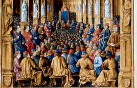

Lezione 8  Crociate
Crociate

Riportiamo parte del discorso pronunciato nel 1095 da Urbano II, a Clermont, per esortare cavalieri e soldati a partire armati per la Prima crociata in Terrasanta.
«E’ necessario che vi affrettiate a soccorrere i vostri fratelli orientali, che hanno bisogno del vostro aiuto e lo hanno spesso richiesto. Infatti, come a molti di voi è già stato detto, i Turchi, gente che viene dalla Persia e che ormai ha moltiplicato le guerre occupando le terre cristiane sino ai confini della Romània, uccidendo molti e rendendoli schiavi, rovinando le chiese, devastando il regno di Dio, sono giunti fino al Mediterraneo […].
Se li lasciate agire ancora per un poco, continueranno ad avanzare opprimendo il popolo di Dio. Per la qual cosa insistentemente vi esorto – anzi non sono io a farlo, ma il Signore – affinché voi persuadiate con continui incitamenti, come araldi di Cristo, tutti, di qualunque ordine (cavalieri e fanti, ricchi e poveri), affinché accorrano subito in aiuto ai cristiani per spazzare dalle nostre terre quella stirpe malvagia.
Lo dico ai presenti e lo comando agli assenti, ma è Cristo che lo vuole. Per tutti quelli che partiranno, se incontreranno la morte in viaggio o durante la traversata o in battaglia contro gli infedeli, vi sarà l’immediata remissione dei peccati: ciò io accordo ai partenti per l’autorità che Dio mi concede.
Che vergogna sarebbe se gente così turpe, degenere, serva dei demoni, sconfiggesse uomini forniti di fede in Dio e resi fulgidi dal nome di Cristo! E quante accuse il Signore stesso vi muoverà, se non aiutate chi come voi si trova nel novero dei cristiani!
Si affrettino alla battaglia contro gli infedeli, che avrebbe già dovuto incominciare ed esser portata felicemente a termine, coloro che prima erano soliti combattere illecitamente contro altri cristiani le loro guerre private!
Diventino cavalieri di Cristo, quelli che fino a ieri sono stati briganti!
Combattano a buon diritto contro i barbari, coloro che prima combattevano contro i fratelli e i consanguinei!
Conseguano un premio eterno, coloro che hanno fatto i mercenari per pochi soldi!
Quelli che si stancavano danneggiandosi anima e corpo, s’impegnino una buona volta per la salute di entrambi!
Poiché quelli che sono qui tristi e poveri, là saranno lieti e ricchi; quelli che sono qui avversari del Signore, là Gli saranno amici. Né indugino a muoversi: ma, passato quest’inverno, affittino i propri beni per procurarsi il necessario al viaggio e si mettano risolutamente in cammino».
(F. Cardini, Il movimento crociato, Sansoni, Firenze, 1972, in Rinaldo Comba, L’età medievale 1, corso di storia Salvadori - Comba, Loescher, Torino, 1990)